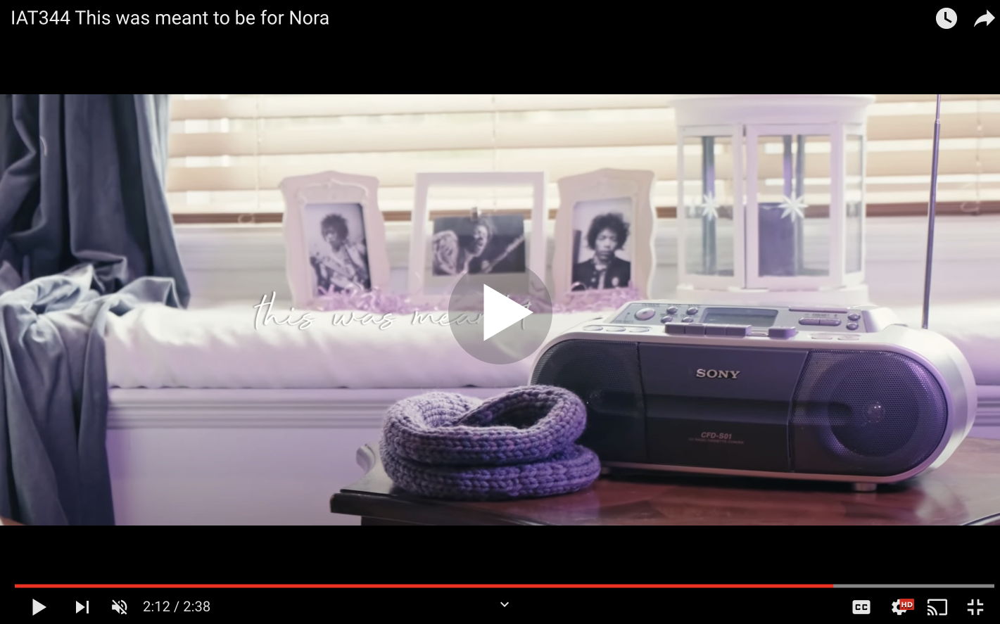
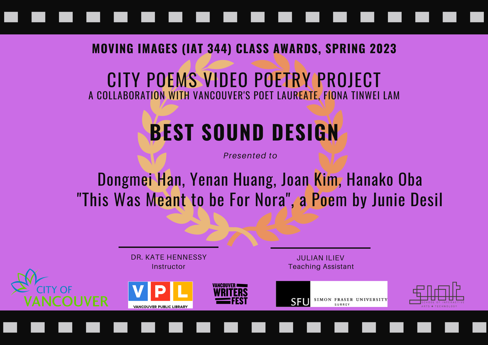

Creating a short video based on the poem "This Was Meant to Be For Nora"
Context
4 weeks, Spring 2023
Team & role
Yenan : Director of Photography, Editor
Dongmei: Sound Designer, Light & Sound
Hanako: Special (Visual) Effects Artist
My role: Director, Set designer
Overview
In the Spring 2023 semester, I had the opportunity to create a poetry video for IAT 334 and collaborate with the Poet Laureate of Vancouver Fiona Tinwei Lam for a Video Poetry Competition. We chose the award winning poem "This was meant to be for Nora" to create a compelling digital story about the establishment of the Vancouver Black Community through the gaze of a little girl and her dream about the Black community legends Jimi and Nora Hendrix.
Final film
This is the final poetry video (click on the image below to see film). In the final in-class presentation of the project, we received the "Best Sound Design" award from the teaching team. I would like to give a special shoutout to our team's sound designer Dongmei who dedicated countless hours crafting the perfect audio for our film.
 Final film on Youtube

Class Award for Best Sound Design
Project overview
For our final short video project, we decided to choose the poem “This was meant to be for Nora” by Nora Hendrix, a Vancouver Black Community Legend who contributed to the establishment of the black community and important monuments such as the Hogan’s Alley and co-founded the city’s only Black church, Fountain Chapel. Our primary goal of this project was to illustrate how the community was established in the eyes of a little girl who tries to reminisce the contribution of her grandmother as physical artifacts of these landmarks no longer remain in reality.
City Poems Contest
This semester, we had the incredible opportunity to participate in The Poet Laureate’s City Poems Contest 2023 in the "poetry video contest" section. The purpose of creating poetry videos is to expand the reach of poetry and interpret the poem in a creative manner by harmonizing visuals, sound effects, animation and narration. My team took on the challenge of picking a poem written about a community we were not very familiar with. Our primary goal for this project was to learn and respect the community's history by educating ourselves on the contributions of Nora and Jimi Hendrix.
My role within the team
My role within the team was director and set designer. Although everybody on the team contributed to the ideation of the short film and storyboarding, I helped direct the conceptualizations into reality. I thought of specific locations we can shoot the scenes and helped source props we could use to reflect the poem better in our film. One of the most important props I sourced was the yarn used for knitting the scarf which took over 3 hours to complete.
Knitting the scarf which took 3 hours
During the actual filming of our introductory scene, I helped direct Yenan who was the cameraman by testing out different lighting, camera angles and motion. This was to perfectly capture the essence of the poem in the first few scenes of the short film.
Me working with lighting in the filming Film Producer Yenan on set
Ideation
Our team initially struggled to grasp the main idea of the poem and unpack the poem in a respectful manner as students who aren’t ethnically Black. We had many brainstorming sessions to come up with the key ideas we wanted to convey through this poem and Hanako came up with the yarn / knitting idea to serve as a metaphor to depict the establishment of the black community. We attended multiple office hours to get feedback on our updated storyboards and after multiple refinements, we got the OK to move forward with the shooting.
Multiple moodboard ideations over the course of 3 weeks
Symbolism
These are the 4 symbols we ideated as a team to draw meaningful connections to the poem in a metaphorical way.
Knitting: We utilize knitting to represent Nora’s efforts and contributions to the black community and use threads of yarn as a gateway to connect the dream and the reality
Tree: The tree that blossoms in our animation is symbolic of the stanza in the poem which talks about passing down Nora’s legacy from one generation to another
Community: The community and important landmarks such as Hogan’s alley is first depicted without colour in black and white. Through the influence of the guitar legend Jimi Hendrix and his famous pieces like purple haze, the city regains colour and liveliness.
Yarn bombing: Hogan’s alley is a landmark that no longer exists. The current area is covered with colourful murals to commemorate the alley and what it represents for the black community, so we want to represent this in our animation.
Rough draft
For the rough draft, we filmed the first two scenes of the short film at my house. It was really important for the first scene to really set the mood and tone for the rest of the short film and introduce the influence of Jimi Hendrix’s music and the yarn. It took us a couple hours to film just the first few seconds because we played a lot with the lighting and tested out different placements and camera motions to get the best shot possible.
Directing the stop motion video
Another metaphor we wanted to use in our short film was a tree. We wanted to utilize a tree to show how Nora Hendrix’s legacy is being passed down from generation to another through stop motion footage of a yarn blossoming into a tree. Yenan and I booked a green room at SFU and got creative with how we wanted to show this process with beads and yarn. For the final film, we decided not to use the stop motion animation to depict tree growth as we felt like animation would be a more appropriate choice to maintain consistency in the visuals of our film
Our team received a lot of valuable feedback from the teaching team after our rough cut presentation.
Rough cut presentation in lecture
Key takeaways
Some of the feedback included contextualizing the poem more such as showing where the poem takes place and who this poem is about. In order to improve this aspect of our film, my teammates went back to Hogan’s Alley and took more footage of important details like plaques. I also added some photos of Jimi Hendrix and put them in picture frames in the background of the first scene to help contextualize Jimi’s music playing on the radio.
Adding more props to the background on set
We were also told to emphasize Jimi’s presence a bit more, so we decided to use neon purple lights when filming and include chords of Jimi Hendrix’s famous piece “purple haze” in the audio production.
Adding purple lights to create hazy atmosphere
Shooting the final cut
The second time around, we made adjustments to the storyboard to contextualize the poem better and we had a more clear direction on how we wanted to execute this short film.
Brainstorming session before shooting the final cut
We had 3 different shooting days; one at my house for the first few scenes, another at Hogan’s Alley and the last one in the green room at SFU to film the stop motion of knitting.
Final cut filming
Reflection
I was initially very worried about this project, because I had a hard time interpreting the poem and coming up with ideas that would respectfully represent the poem in such a short film. However, through countless hours of brainstorming and getting valuable feedback from the teaching team, we were able to represent the poem through a series of metaphors which was a huge goal my team had from the start. I am very satisfied with the final edit of our short film and I am thankful for all my group members’ hard work and contributions. If I could do this all over again, one thing I would do is take a lot of time to read through each stanza of the poem and really take the time to understand the history of the Vancouver Black community because without understanding the essence of the poem, it’s impossible to produce a film that reflects it.
This is the website I referenced to educate myself on the Vancouver Black Community and Hogan's Alley, a crucial landmark.
I would like to dedicate special thanks to the teaching team- Kate Hennessey, Julian Iliev, Fiona Lam the Poet Laureate and finally, Junie Desil for supporting us every step of the way with insightful feedback.